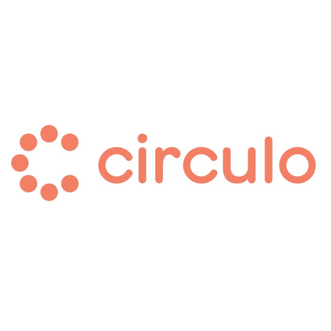

Experience
-
Software Engineer
St. Louis, MO July 2022 - Current- CRTR: Using Golang, Kafka, Kubernetes, AWS, GitLab, Mongo, and Oracle SQL we are able to host restful API's which internal and external vendors use in order to access billions of claims data almost instantly. The work done daily centers around ETL's, API's, and ironing out any functions which may be required by end users and source systems whether supporting existing functions or creating new ones
- Windower: Designed and developed a two part back-end micro service to reduce on the number of write operations to our mongo database. Instead of directly writing claim events to our database we allow the claims to mature like fine wine. This involved modifying existing software to produce events to a kafka topic and creating a consumer that would be able to horizontally scale and be fault resistant.
- On-Call: Working on service tickets for external and internal vendors. Making sure our systems run smoothly and aid customers as needed. Performing reports, rehydrations, system analyses, coding patches, ticket creation and meeting with customers to solve issues in the CRTR ecosystem.
-
Software Engineer

Columbus, OH May 2021 - June 2022- SONAR: Using AWS, Terraform, Gitlab, Go, React, Atlassian and Olive Helps LDK to build a platform to facilitate communication with providers. Working full stack on a server-less application writing RESTful API's, React/LDK components, connecting them, writing tests, and infra code.
- DAC: Contributed to our internal Email, User, and Slack bot micro services which helped reduce dependencies of other external services/engineering time/spending.
- Admin UI: Our old admin UI was created in angular and had lots of bugs so I had the liberty of implementing the face lift for it. This involved rewriting code in vue.js and using figma to turn designs into components and putting them together.
-
RPA EngineerAccelirate
Miami, FL Oct 2019 - May 2021- Team Lead: Managing and mentoring a group of 10 engineers on software process's and best practices related to document processing. I facilitate a weekly stand up where they provide updates on their various tasks and I act as a scrum master unblocking and helping as needed.
- Document Processing: Architected and engineered generic software systems to automate end to end business process's involving the large scale ingestion of various documents using ML Models, OCR, NoSQL, AWS, UiPath AiFabric, Orchestrator API's and Scalyr. These process's on average created 6-figure ROI's for our clients and processed thousands of documents per day with various components running continuously.
- Text To PDF: Created a .Net package to convert UTF-8 text using no external API's. This was used on hundreds of thousands production emails in order to create viable input for invoice processing along with creating a better user experience for validation and generating more accurate retraining data.
- Automation Research: Conducted research on the latest emerging automation technologies in order to facilitate the creation of bleeding edge solutions. Created POC's, use cases/analysis, and presentations in order to discuss viability, strategies, and standards to be applied company wide with the management team.
- Seminar Host: Host of multiple client and internal facing seminar sessions. These sessions where streamed live and involved discussing either client implementations or technical knowledge. Topics discussed during these sessions where OCR Security, Intelligent Document Processing, and Generic Solution Discussions
-
Software EngineerMiami Dade College
Miami, FL June 2018 - Oct 2019- MDChem: Lead developer for creating the front end of the MDC chemistry department mobile app. The app was made using Unity and the MERN stack; the app consisted of mini-games which where user stories/requirements described by the department head and acted as a fun way to engage students. The back-end allowed for multiple schools to distribute the app and monitor student progress along with normal administrative functions.
Projects
- MeetTwoEat: Android app for finding places to meet up and dine between you and another friend using your locations. Was created using Android Studio and Google Place's API's.
- Memer: A cli application that listens to your requests and process's it using Google Clouds Voice Recognition API's and Imgur API's in order to display what you requested as ASCII art.
Programming Skills
- Languages: Go, JS/TS, Java, C# Working Knowledge: Python, Bash
- Technologies: AWS, Kafka, Gitlab, Mongo, Kubernetes, Unix Working Knowledge: React, Angular, Vue, Django
Education
-
Bachelor of Science in Computer Science, Honors College; GPA: 3.42
Florida International University Miami, FL Aug. 2018 -- 2021 -
Associate in Arts in Computer Science; GPA: 3.9
Miami Dade College Miami, FL Aug. 2016 -- July 2018